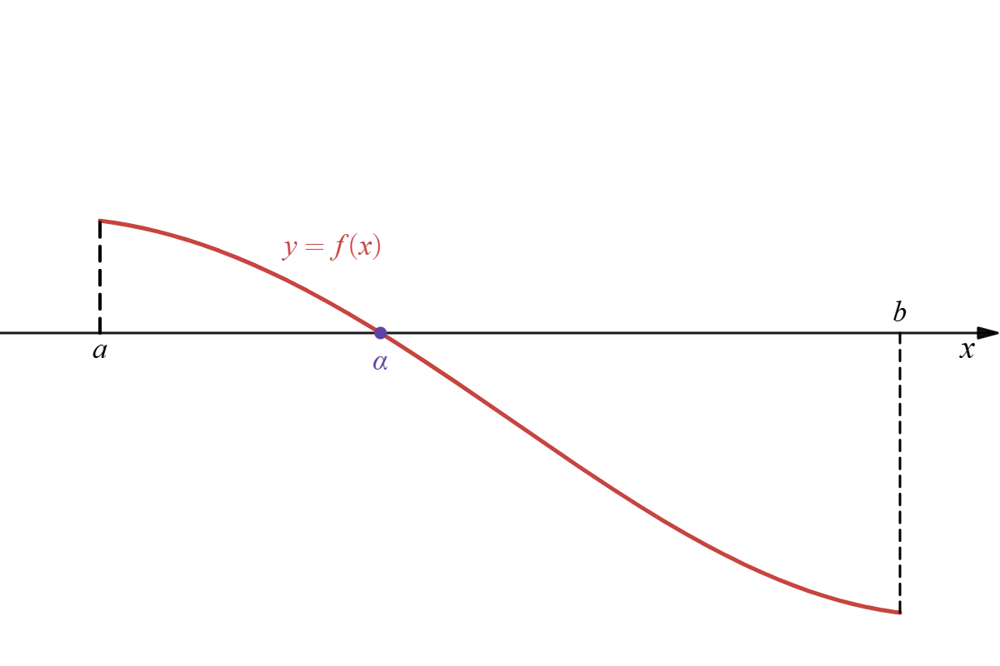
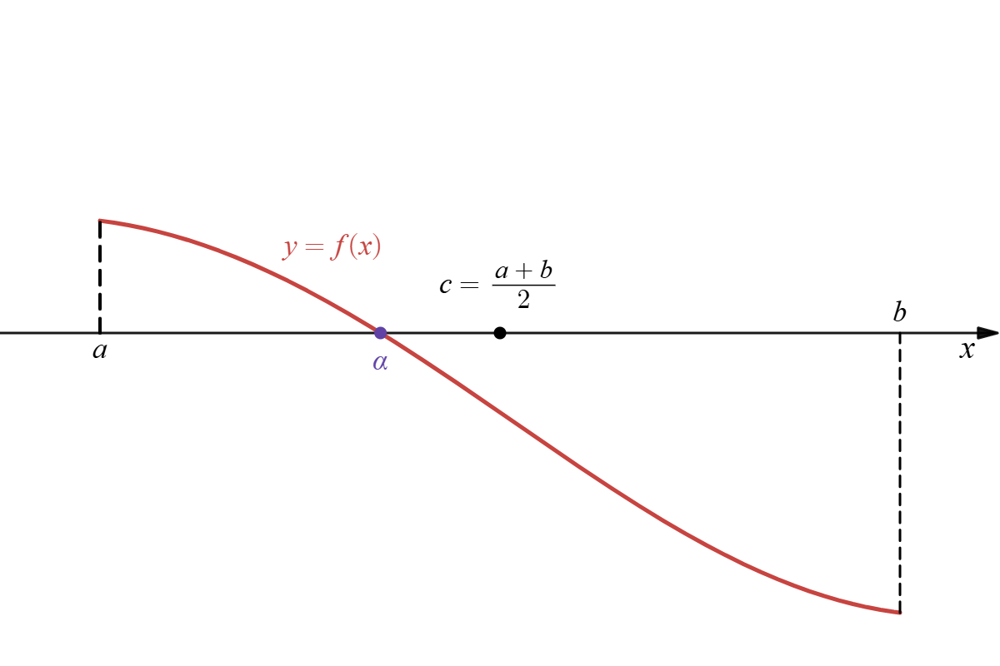

二分法
二分法のアルゴリズム
区間 \([a,b]\) 上で連続な関数 \(f(x)\) を考えます。 ここで、\(a,b\) は \(f(a)\) と \(f(b)\) が異符号となるもの、すなわち
を満たすものとします。
方程式
の解 \(x=\alpha\) を求めたいです。
曲線 \(y=f(x)\) のグラフを描くと次のようになったとします。
区間 \([a,b]\) の中間点を \(c\) とすると
であり、図示すると次のようになります。
この場合、区間 \([a,c]\) に解 \(x=\alpha\) を持つことがわかります。 これは中間値の定理より
であることと同値です。
区間 \([a,b]\) に解を持つというのが、長さが半分の区間 \([a,c]\) に解を持つということに言い換えられました。 この操作を繰り返すことにより、区間が半分ずつ小さくなり、解 \(x=\alpha\) が特定できそうです。 この手法を二分法といいます。
区間 \([a,b]\) 上の連続関数 \(f(x)\) を考える。 ただし、\(f(a)f(b)\lt0\) であるとする。
- \([a_0,b_0]=[a,b]\) とおき、\(k=0\) とする。
- \([a_k,b_k]\) の中間点 \(c_{k+1}=\dfrac{a_k+b_k}{2}\) を求める。
-
次のように \([a_{k+1},b_{k+1}]\) を定める。
\(f(a_k)f(c_{k+1})\lt0 ~\Longrightarrow~ [a_{k+1},b_{k+1}]=[a_k,c_{k+1}]\)
\(f(a_k)f(c_{k+1})\gt0 ~\Longrightarrow~ [a_{k+1},b_{k+1}]=[c_{k+1},b_{k}]\)
- \(k\gets k+1\) として (2) に戻る。
この手法を二分法という。
二分法の収束と誤差
関数 \(f(x)\) は区間 \([a,b]\) 上の連続関数で
を満たすような \(\alpha\in[a,b]\) が存在する。